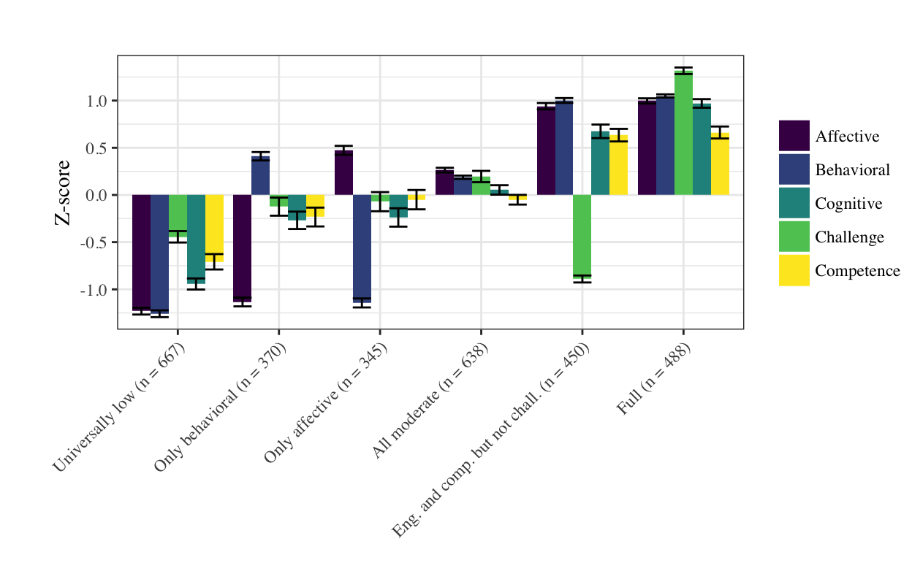
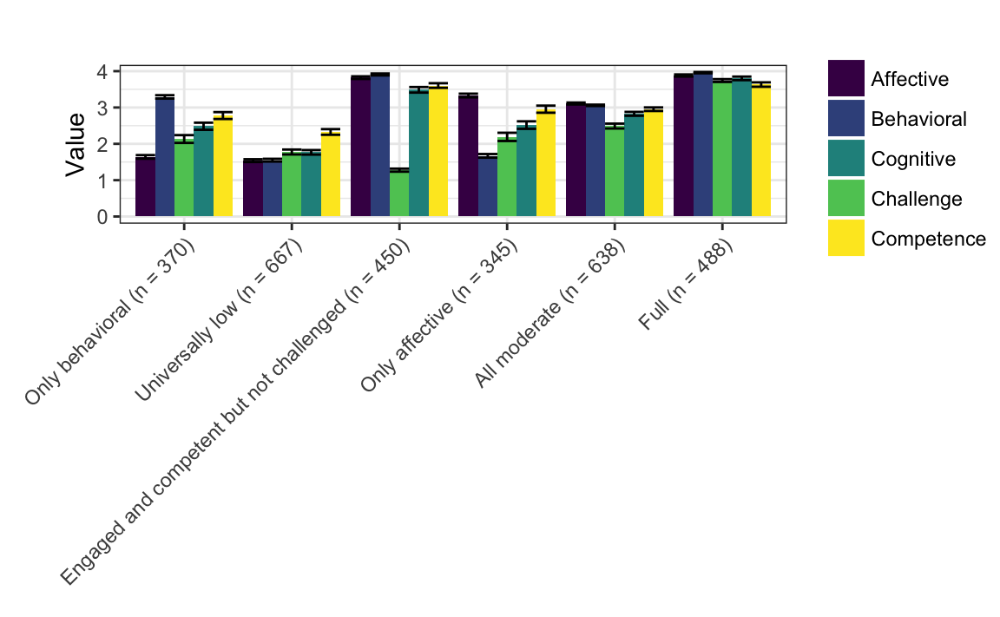

Chapter 5 Results for Research Question #2
5.0.1 Results for Research Question #2: What profiles of youth engagement and its conditions emerge from experiential data collected in the programs?
Following from the in-depth exploration of a wide range of models and the candidate solutions (described in the Appendix), a specific model is selected for use in subsequent analyses. This model was selected on the basis of a range of criteria including fit statistics, statistical tests, and concerns of interpretability and parsimony. In particular, the model one type, six profile, and model one type, seven profile solutions are described. Tthis model demonstrated superior fit on the basis of the information criteria (AIC and BIC) and on the basis of the measure of classification accuracy (entropy). It was also highly interpretable. Descriptions of other candidate solutions are included in the appendix. For this and other soltuions, the raw data and the data that are centered to have a mean equal to 0 and a standard deviation of 1 (thus, the y-axis on each of the plots is labeled “Z-score”).

This solution is characterized by:
- A full profile, profile 6
- An universally low profile, profile 2
- An all moderate profile, profile 5–and, like, the model 1, six profile solution–with moderate levels of affective engagement
- An only behaviorally engaged profile, profile 1, with moderate levels of behavioral engagement, very low affective engagement, and moderately (low) levels of cognitive engagement and challenge and competence
- An only affectively engaged profile, profile 4, with moderate levels of affective engagement, low levels of behavioral engagement, and moderately (low) levels of cognitive engagement and challenge and competence
- An engaged and competent but not challenged profile, profile 3, characterized by high levels of each of the three dimensions of engagement and of competence, but with low levels of challenge
The number of observations associated with each of the profiles is somewhat balanced, with the universally low profile with the largest number of observations (n = 667; the same number for this profile as in the model 1, five profile solution), followed by the all moderate profile (n = 638). Each of the other four profiles were associated with 300 to 400 observations. Unlike other solutions, this solution was associated with profiles that distinguished observations on the basis of both: There were profiles for only behaviorally and affectively engaged and for engaged and competent but not challenged.
5.0.2 Summary of research question #2 findings
After reviewing a wide range of models, a relatively simple model (model 1) with six profiles was selected for use in subsequent analyses. This model has momentary profiles of engagement and its conditions characterized by both varying levels on the dimensions of engagement and perceptions of challenge and competence. In addition, the number of observations across the profiles is relatively balanced.
5.1 Results for Research Question #3: How do data practices relate to youth engagement in the programs?
5.1.1 Null models
The null models presented in the table provide insight into the levels at which predictors may be able to explain the outcome. For all six profiles, the ICCs at the program level were very small, from 0.00 to 0.023. This suggests that very little variability can be explained simply by the program. For the momentary level, the ICCs were also very small, ranging from 0.004 to 0.011. Finally, the youth-level ICCs ranged from .099 to .427.
Looking across these values, considering variability at the program, momentary, and youth levels, most of the explained variability in the responses is associated with youth; the program and momentary levels were associated with very small values, suggesting that variables at these levels have minimal variability to explain. In turn, this suggests that these variables, including those for work with data, may not have strong effects in terms of their relations with the PECs.
In terms of specific ICCs at the youth level, the value for the youth-level ICC was highest for the full profile, suggesting that some youth have a strong tendency to be fully engaged (possibly due to their initial interest or other individual characteristics and differences). The other profile characterized by a consistent pattern across all of the variables–the universally low profile–had a modest ICC, .265. Finally, a large amount of variability is associated with the residual (variance that is not associated with the program, momentary, or youth levels). This suggests that there is wide variation in students’ responses that may not be readily explained or predicted.
5.1.2 Models with variables for aspects of work with data added separately
When the predictor variables for work with data are added, some overall patterns and specific findings can be identified. The only relations with p-values that were below the criterion for statistical significance (.05) were for the relations between modeling data and the full profile (B = 0.036 (0.016), p = .016) and between generating data and the full profile (B = 0.029 (0.015), p = .024). Communicating and interpreting findings was positively related to the Only behavioral profile (B = 0.025 (0.014), p = .043).
Adding these variables changed the (conditional upon the random effects) r-squared values from, .002 to .018, very small changes suggesting that the aspects of work with data do not strongly predict the PECs. This is in-line with the correlations for these variables with those variables that make up the profiles, and the ICC values at the momentary level.
The sensitivity analysis for the effect of generating data suggested that 1.884% of the inference would have to be due to bias to invalidate the inference, suggesting that this effect is not very robust to potential sources of bias, such as an omitted (in this analysis) confounding (or control) variable. For the effect of modeling, 9.835% would need to be due to bias to invalidate the inference and for the effect of communicating and interpreting findings, 9.41% would need to be due to bias.
5.1.3 Models with the composite added
For the composite of work with data, the composite predicted the profile for only behavioral (B = 0.007 (0.004), p = .021), but not any of the other profiles. However, this coefficient is very small in practical terms. 12.261% would need to be due to bias to invalidate the inference. The change in r-squared values ranged from .003 to .020, suggesting minimal potential relations among factors (such as support for work with data as measured by the composite variable) at the momentary level. When the composite was treated as a dichotomous (instead of a continuous) variable, so that the variable takes a value of one if any of the aspects of work with data are present, the results are similar in terms of the magnitude of the effects and their significance, as none of the relations are statistically significant when the dichotomous variable is used.
5.1.4 Summary of findings for research question #3
When looking across findings, we find few relations between work with data and the profiles, though there were notable effects of modeling and generating data, though they were small effects (i.e., when students are doing this, they are around 3% more likely to be responding in a way associated with the full profile).
The composite for work with data had a relation of around 0.01 with the only behavioral profile, suggesting that for each one-value increase in the composite (which has a range from one to five), this profile is around 1% more likely. These findings are similar to those obtained when the model 1 type, seven profile solution is used for the outcome variables; see the appendix for more detail. Broadly, further explanations and investigations of these effects –focusing on the characteristics of work with data in the context of summer STEM programs and how this support is measured in terms of codes from the video–are the focus on research question #4 and are discussed in the next chapter. Moreover, these findings are deepened in subsequent analyses for research questions #3.
5.2 Results for Research Question #4: How do youth characteristics relate to their engagement in summer STEM programs?
In this section, models with the individual characteristics added separately followed by models with their interactions with the work with data composite are specified.
5.2.1 Models with pre interest, gender, and under-represented minority (URM) status
These results show that overall pre-interest is associated with the engaged and competent but not challenged profile (B = 0.039 (0.021), p = .009). The effect of being a female has a relation of 0.059 (0.036, p = .054) upon the probability of a response being associated with the universally low profile; though this effect did not meet the criteria for statistical significance, sensitivity analysis to determine how much more robust the effect would need to be to make an inference. For the effect of overall pre-interest upon the engaged and competent but not challenged profile, 17.879% would be needed to invalidate the inference, suggesting a moderately robust effect. For the effect of gender upon the universally low profile, 16.996% of the bias would need to be removed (or the effect would need to be larger by this percentage) to sustain the inference. The change in r-squared values ranged from .004 to .007, suggesting that pre-interest and other individual characteristics - in addition to the aspects of work with data - have minimal relations with the PECs. This is more surprising than the similarly minimal relations observed for work with data: as the null models indicate, there were large ICCs (a large proportion of the variability in the outcome variables) at the youth-level (as pre-interest, gender, and URM status are variables associated with this level). This is discussed further in the next chapter.
5.2.2 Pre-interest, gender, and URM status interactions work with data composite
These results show similar patterns to the earlier models.Like in the models with only pre-interest and the other individual characteristics alone (and like in the model with the individual aspects), pre-interest is related to the only behavioral profile (B = 0.033 (0.018), p = .033). add% of the effect would need to be due to bias to invalidate the inference.
Being female is again related but not to a level that it meets the criteria for statistical significance (B = 0.064 (0.041), p = .059). With the interactions added, the composite was no significantly related to the only behavioral profile (B = 0.016 (0.016), p = .156) to a similar extent and with similar robustness as found in the separate model. One interaction, between pre-interest and being female, had a significant effect upon the profile for full engagement (B = 0.012 (0.006), p = .026). However, only 1.953% of the effect would need to be due to bias to invalidate the inference. The r-squared values, relative to the models with only random effects (the null models), increased from .003 to .028, again suggesting small effects of the predictors upon the PECs.
5.2.3 Summary of findings for research question #4
When looking across findings, we find minimal relations between pre-interest and other individual characteristics.
In particular, we found that pre-interest was related to the engaged and comptent but not challenged profile to a modest extent. Being female did not demonstrate statistically significant relations with the univerally low profile, though some moderately-sized effects that were nearly statistically significant were observed and interpreted in terms of how much bias would need to be reduced (or how much the larger the effect would need to be) in order for this relation to be statistically significant.Note that the positive pre-interest coefficient is the estimate from the model with the interaction (without the interaction, the coefficient was also statistically significant and was 0.039). These results, like those for research question #2, are similar to those obtained when the model 1 type, seven profile solution is used for the outcome variables. There were few interactive effects observed; the magnitude of the effect of the composite and gender interaction was small (as were the changes in the r-squared value as a consequence of adding this interaction), and the effect appears to not be highly robust to potential sources of bias. Like for research question #2, reasons for why this may be are explored in the next chapter.